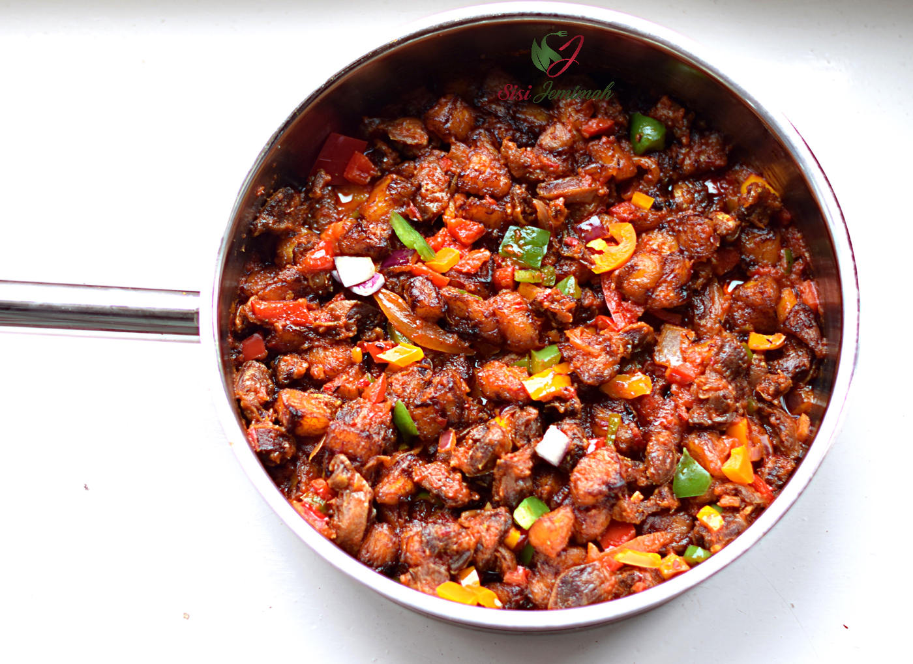

Gizdodo Recipe
Gizdodo is the perfect combination of plantains and chicken Gizzards, both mixed in a pepper sauce. You can say this recipe is a 3-in-1 meal. It could be serviced as a side dish for other cuisines.

Description
Gizdodo is a flavourable dish that delivers great flavor with minimal effort. It requires three major ingredients, which would be listed below.
Ingredients
- 1 Pound Gizzards
- 2 Plantains (Ripe)
- 4 Tomatoes
- Vegetable Oil
- Chicken stock
- 1 Teaspoon Curry Powder
- 2 Seasoning Cubes
- 1 Teaspoon Salt
- 1 Large Onion (Diced)
- 1 Habanero pepper (Minced)
- Green, Yellow, and Orange Bell pepper
Instructions
- Wash and clean the Gizzards thoroughly
- Place the Gizzards inside the cooking Pot add the diced onions,1 seasoning cube, curry powder, and Salt to taste. Add water to cover up the Gizzards and cook for about 40 minutes or until tender.
- Preheat some cooking Oil and fry the Gizzards till brown. Remove from Oil and set aside.
- Peel and cut the Plantain into ‘cube-like’ pieces, sprinkle with a pinch of salt and fry till golden brown.
- Put about 4 Tablespoons of cooking Oil into a Pan, add and stir-fry the Onions for about 2 minutes. Add the diced Tomatoes and Minced Habanero pepper. Fry for 3 to 5 minutes or anywhere in between.
- If too thick add a bit of chicken stock or water to loosen it up if necessary. Add 1 Seasoning Cube, curry powder, and Salt to taste.
- Finally, add the Gizzards, the Fried Plantains, and the diced bell peppers. Stir together thoroughly, leave to simmer for 3 to 5 minutes. Serve and enjoy.
Related Posts